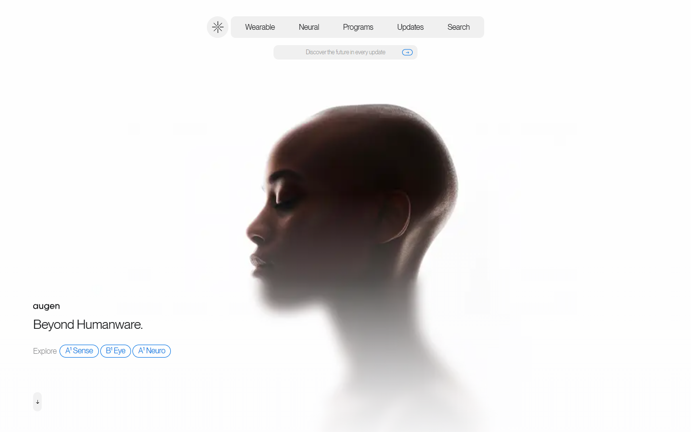
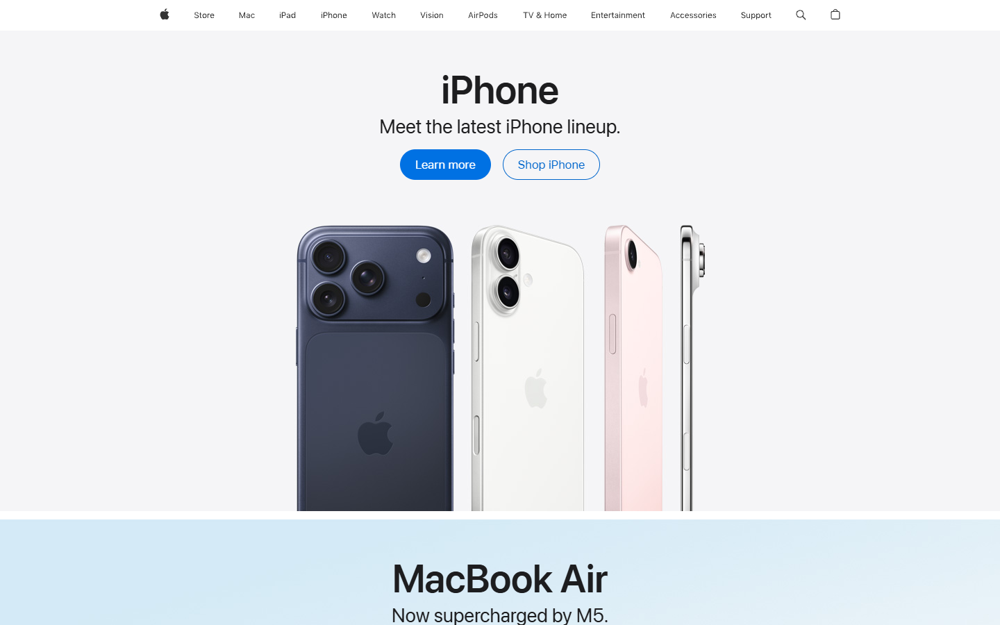
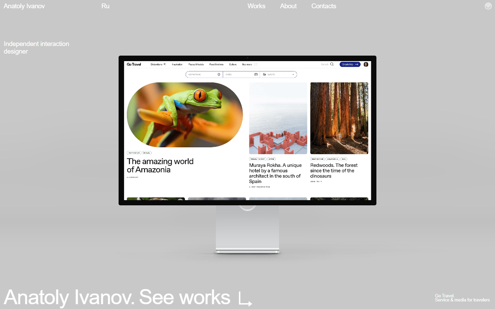
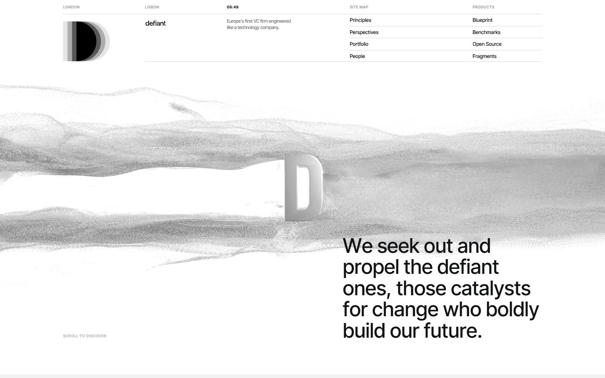
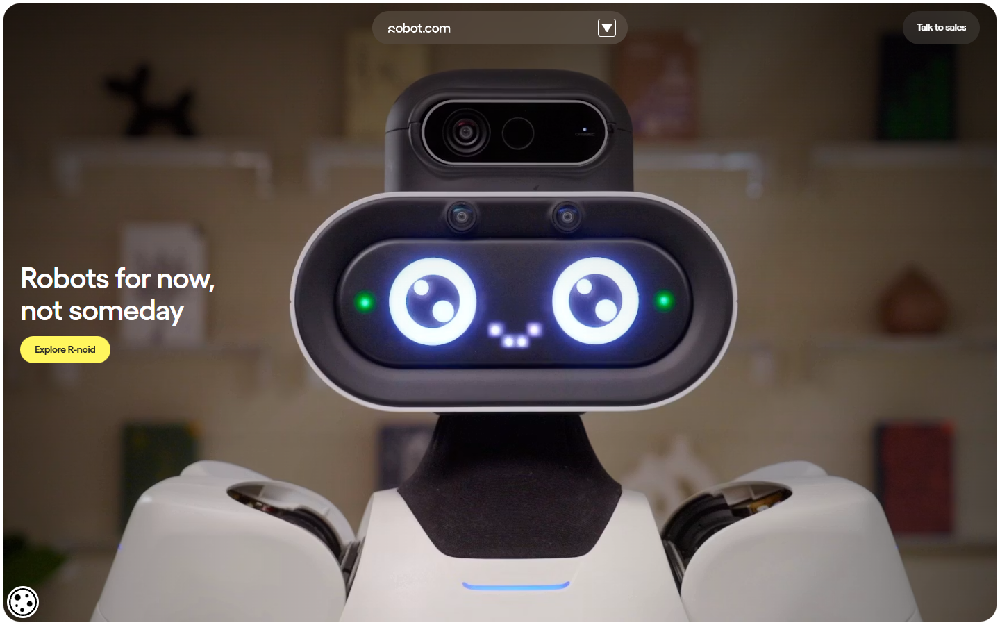
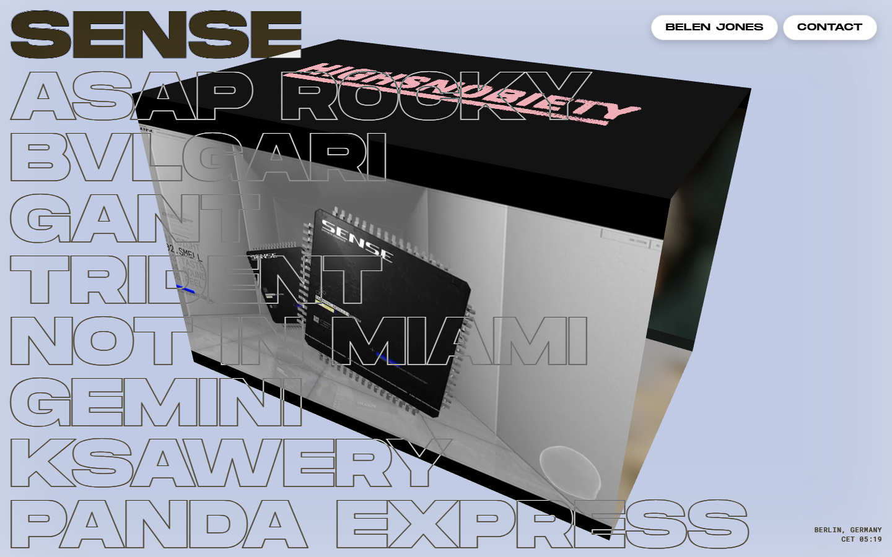
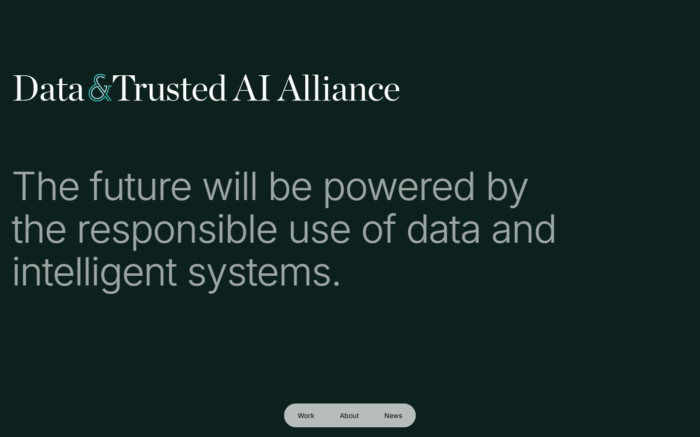

56 entries
8 categories
Readable code included
Aesthetic Reference Library
一个给 AI 设计代理使用的网页/PPT 审美参考库。它不是截图收藏夹，而是把真实优秀网页和演示稿整理成分类、标签、预览、适用场景和兼容性规则，让 AI 生成网页、产品页、作品集或演示稿时有稳定参考。
为什么做这个项目
AI 已经很会写页面代码，但它经常不知道什么是真正成熟的网页审美，也不知道字体、布局、背景和动效为什么能搭在一起。只说“高级一点”“科技感一点”太模糊，模型很容易自由发挥，最后生成结果不可控。
这个库想把审美从一句模糊提示变成可读取、可检索、可约束的数据层。AI 代理可以先看真实案例，再按任务类型选择参考，而不是凭空猜风格。
它解决什么问题
问题
- AI 生成设计风格不稳定
- 截图收藏缺少结构，代理难以复用
- 字体、布局、背景和动效容易混搭失控
- 生成代码能跑，但视觉判断没有稳定依据
方案
- 把真实优秀案例整理成机器可读的数据
- 用分类和风格标签帮助选择参考方向
- 用兼容性规则约束设计元素组合
- 把设计参考变成可持续扩展的资料层
它怎么工作
1. 收集真实案例保留来源、预览和设计场景。
2. 结构化审美信息整理分类、标签、适用场景和说明。
3. 加入兼容规则约束字体、布局、背景和动效组合。
4. 生成公开 Demo输出 GitHub Pages 页面和可读代码入口。
代码入口
核心代码可以直接在 GitHub 仓库里查看。
分类概览
产品应用 24
商业网站 12
个人网站 7
投资金融 6
电商消费 3
组织公益 2
媒体娱乐 1
PPT模板 1
样例预览





